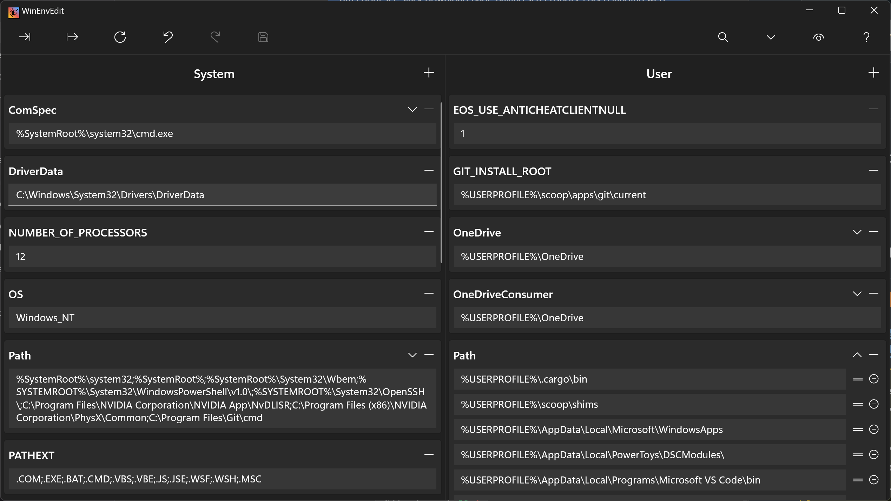
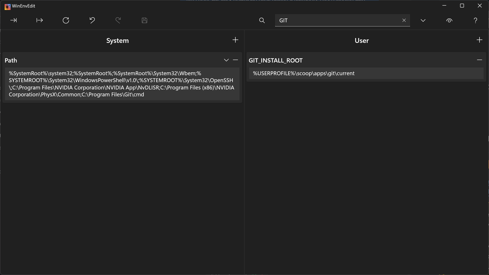
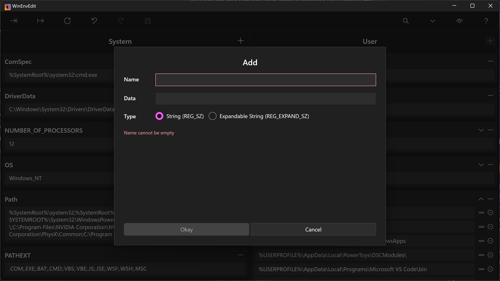

Edit with context
Separate user and system panes show which scope a variable belongs to. Search by name or value and expand path lists to edit individual entries.
Free · Open source · Windows 11
View and edit user and system environment variables side by side. Manage PATH entries, undo unsaved changes, and import or export a backup.



Separate user and system panes show which scope a variable belongs to. Search by name or value and expand path lists to edit individual entries.
Changes remain pending until you save. Undo and redo help you review your edits; refresh reloads the current Windows values.
Export variables to a local TOML file before changing them. Import a saved file when you want to restore or transfer settings.
The application opens normally without administrator rights. Saving user variables does not ask for elevation. When you explicitly save system variables, Windows asks for administrator consent through UAC. A short-lived process applies those changes and exits.
If you decline the UAC request, the system-variable save fails. Changing system environment variables can affect other applications, so review the names and values before saving.
Available for Windows 11 PCs with x64 or ARM64 processors.
winget install meop.WinEnvEdit
winget upgrade meop.WinEnvEditscoop bucket add meop https://github.com/meop/scoop-bucket
scoop install meop/winenveditThe Chocolatey package has been submitted for moderation. WinEnvEdit is also available from the Microsoft Store.